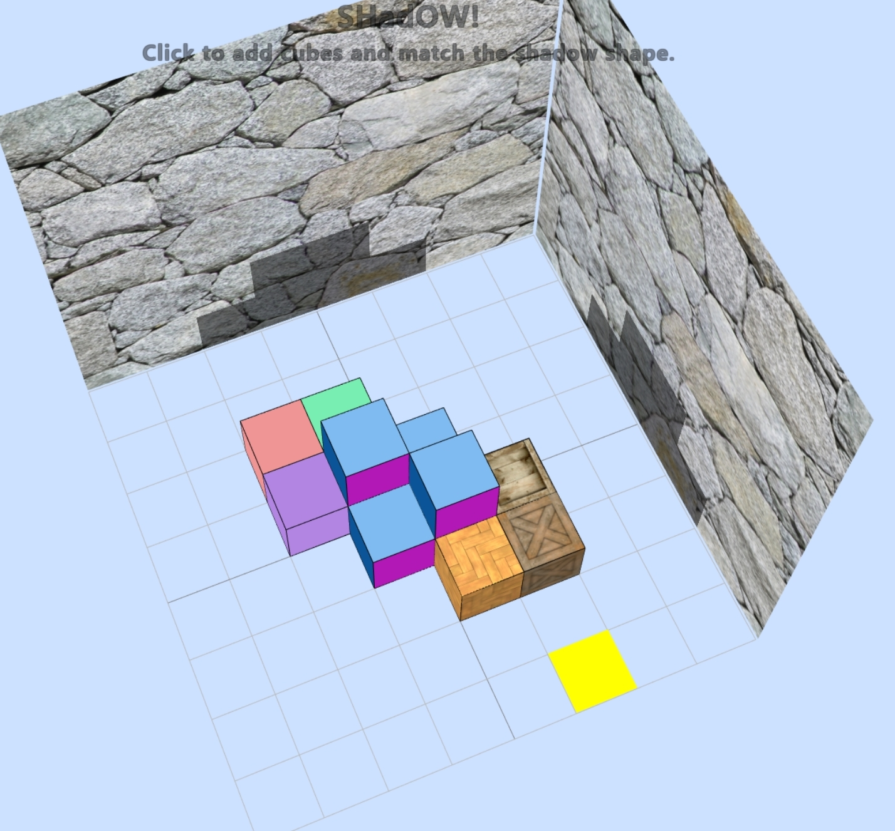
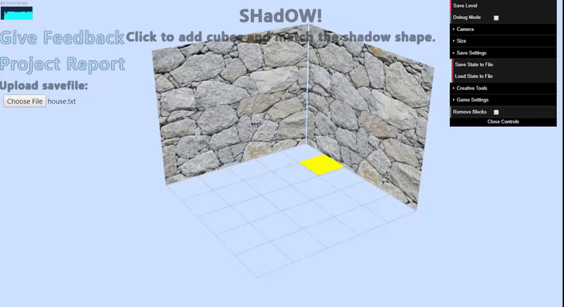

COS426 Final Project SHadOW! — Project Report
Switch to: Game
Narek Galstyan (narekg) and Lucas F. Salvador (ls24)
Goal
Starting off, we knew we wanted to work with shadows so we started brainstorming around different game ideas that involved shadows. Inspired on the game Shadowmatic, we decided to build a game with a simpler form of shapes (blocks).
What did we try to do
We built a 3D game where the goal is to build a 3D object that casts a predetermined shadow. It is trivially easy to go the other way round: given 3D object, predict its shadows. However, we felt the opposite of the problem is just hard enough that it lies on that perfect game difficulty curve. Having built the game, we think this intuition was correct as the game has been quite amusing and absorbing for us and for others we asked to play. Furthermore, we think the many ways to arrive to a solution could nurture a creative community around building (and sharing) aesthetic solutions.Who would benefit?
The game is not meant to be played for hours. It is a nice little fidgeting tool for college students, adults and anyone else who wants to spend their breaks solving a small interesting puzzle in a visually pleasing environment, or who wants to build some cool-looking voxel-art (with cool projecting shadows) and share it with their peers.Previous Work
What related work have other people done?
Shadowmatic is the game we took the greatest inspiration from. It presents the player with a set of objects that initially do not look like anything but if viewed from correct direction, this suddenly changes.We also took some ideas from Monument Valley game when designing our levels. This game offers a great diversity of block-structured game levels. Finally, games like Minecraft inspired the idea of using the blocks to build recreations of 3D shapes with voxels in an intuitive way (think Minecraft creative mode).

When do previous approaches fail/succeed?
Although our approach is inspired by that of Shadowmatic, there is little in common in our final result and in that of Shadowmatic. So it is hard to argue that we built off of their approach and that they fail/succeed at anything in particular.Approach
What approach did we try?
We built a 3D game environment that in the barebones consists of a grid floor, and 2 walls (and a lot of invisible stuff some of which you can learn about in the report or can look at our code).In the game the player primarily navigates using mouse movements and mouse clicks. Mouse click and drags provide an intuitive interface for changing viewpoint in the game. Mouse clicks on the two dimensional floor add cubes at the click location. Two light sources parallel to two walls, and infinitely far from them, cast the shadows of the blocks on side walls. The goal is to place these blocks such that they cast a shadow that is color-outlined on the walls already. Each level of the game consists of one such outline on the walls ranging from trivial to quite challenging.

Under what circumstances do we think it should work well?
We think this game works best when trying to solve the levels creatively, as there are multiple solutions to a single shadow game, and our cube editor has various block options from which to choose from. We can imagine this as a game of sharing as well, where the solutions to a puzzle can be shared with other users. To simplify this last task, we implemented a method to export creations to a file, and to import them back into the game. This is a nice way to share designs and save progress.Methodology
What pieces had to be implemented to execute our approach?
Below we present a subset of elements that we had to implement to make this game a reality. We tried to include most of the interesting examples we had, but we did not list all of them to keep the report as succint as possible.Initial World
We set up our initial world with all the visible elements in addition to several hidden components. Such hidden components include: Additional floor plane, cameras, shadows lights, hidden html windows, etc.Two particular implementation details that are worth mentioning are sidewall and floor geometries. The visible floor consists of a grid, which cannot do appropriate raycasting, so we could detect which square the mouse is on. To solve this at the location of the floor grid, we also added a transparent plane and looked for intersections with this plane during raycasting.
When working on the sidewalls, we realized that sometimes it is difficult to put blocks close to the sidewall when there are other existing blocks obscuring the view. Therefore, instead of a solid wall, we created two walls per visible wall. Both are single sided walls and therefore can take different three.js opacity values. We used this trick to make the wall half-transparent when viewed from behind.
Rendering
Rendering cubes in correct locations with correct parameters was quite hard and tedious. This became even harder when considering possible changes of grid sizes. We settled by setting our own version of a coordinate system that we rescaled appropriately according to the grid size. Then, we figured out, for each cube added, what is the correctvoxelthat it should occupy. Adding to this difficulty was adding the selection panel on the appropriate face cube, and the borders around the cubes. We did this by working the position and rotation based on that of the targeted object.
Mouse Handling
Another interesting challenge that had to be addressed here was the difficulty of differentiating a click from a drag. In Javascript there is no drag event, and a drag is just a *mousedown* followed by *mousemove*. We wanted not to have separate controls for both, as computer users are used to using clicks and drags interchangeable. That is why we implemented a series of event handlers that executed a state machine correctly ending in *clicked* or *dragged* states when respective actions got triggered by the user.Types of Blocks
We implemented several types of block materials that the user could change. In the case of color blocks, we also gave the user the possibility to change the color of each block they are putting. This expands the creative possibilities and lets us create maps like the following:

One last thing to note is that, since blocks do not have outlines, it was hard to tell when a block started and ended. Thus, we added a line geometry around all our boxes that serves as a wireframe around the boxes. This greatly improved visibility.
Levels
To implement levels, we had to make sure that the user knew exactly what kind of shadow they had to target on the wall. Naturally, we needed to do this in a way that they could see what parts of the shadow they had and which ones they did not. We settled then in setting semi-transparent planes in the wall marking the locations of the shadows. Then, the projection of the shadows would naturally show them the completion of the level.
In order to set up a level, we created several text files that mark in the rectangle wall grid, which ones form the shape in each wall. Then, it was just a matter of position the planes in the wall in that same shape. To do this, we used the projection of the block coordinates (the ones we used earlier) into the wall.
Winning Conditions
While the visualization of the level followed easily from the object positioning and the lightning, we had to make sure that we could determine if the player has won (or not) the current level. To do this, whenever a cube was added or removed, we reverted to the coordinates based on the number of cubes from the corner (where the walls and floor meet), projected that into the 2D coordinates represented by each wall, and then compared that with the coordinates determined by the level file. On a complete match, we showed the user a win message and animation.Miscellany
Level Generator
We added a GUI element that helps save arbitrary shapes that the player creates on the playground in our internal level format. This way, our users can incarnate any game levels bounded only by their imagination (and maximum playground resolution), seamlessly share these levels with us and have us include them as permanent game levels.

Saving Block Designs
We added an input/output method with text files into the websites. With this, the user can export a representation of the map into their computer, and re-upload it later. In order to go from geometry to text, and viceversa, we saved the dimensions of the map, the position of all block geometries, the type of block and the color (if appropriate). Then, when re-uploading, it was just a matter of recreating all of these objects into our scene. Sharing these output files allows for sharing of solutions and models as well.
Win Animation
When the player completed the game, we wanted to really celebrate their achievement. An alert ofYou won!did not seem honest and celebratory enough. Instead, we integrated Tween library to automatically move the camera into wall-parallel views, so the player could see that they really did quite some work and that their piece matches both shadows.
Results
We asked many of our friends to play the game and give us feedback. Some of the features such as saving levels, adding instructions explaining how to play and adding functionality to delete blocks were implemented upon their request. Many of the people that we asked to play our game, not only asked for the public URL to be able to play later, but also asked for the Graphics course website to take a look and potentially take the course in the future.
It was very useful to have a simple working prototype early on because it allowed us to continually get feedback as we went on. One feature we got asked for a lot was the ability to save progress. Doing this online, however, would have required a backend with user credentials and game state storage, which we did not have time to put together. Instead, we settled for local storage via text files.
Discussion
Overall, is the approach we took promising?
We think the approach and overall idea is very promising and three.js was just the right tool to write it in. Although as the game progresses, a loud PC fan is unavoidable, given the implementation in Javascript, we think three.js was a good choice of environment. We could potentially optimize it further to use less resources.What different approach or variant of this approach is better?
There is no game feature in the game that we would implement differently. There are however some features that would enable better user experience and more complex levels. For example, in large levels such asHeart-Diamondit may be tedious to click once for every box, as the level requires a lot of boxes. To fix this, we could add a functionality so the player could indicate the location of the initial block and drag to automatically fill the rest. A help section might be useful to explain all the usage scenarios and features of the game.
What follow-up work should be done next?
An immediate next step would have been to add a backend. This would enable a range of possibilities and make the game more production ready. A backend would allow us to add a competitive component where players could compete based on number of blocks and the speed of completion in a given level. Similarly, we could implement a creation-sharing tool that would allow players to see other cool solutions, download them and mod them on their own.We would also like to experiment with a 3-wall version of the game. The shadow space is still greatly underconstrained and there are several solutions to many levels. 3-wall version would additionally have a wall in the ceiling with an appropriate light to project shadows on the wall. Then a level would be specified by three projected shadows thereby making the challenge strictly more difficult. Lastly, adding more interesting options for box materials might be interesting from a creative standpoint as it would expand the number of models we could make with the app. Going this route though, would require to rework the UI further to make the selection of material faster and more intuitive.
What did we learn by doing this project?
We learned a lot about the underlying mechanics of rendering pipeline. Assignments were not really good at making this clear as most of infrastructure work was already done for us, but the final project was a great way to do all the plumbing with our own hands and learn how that is done as well. We also learned a lot about three.js, its features and the community around it. We were amazed how good the framework was for expressing our ideas in!This project was also a great exercise of iterative design and implementation. We learned how to incorporate feedback, how to critically evaluate our project, catch inconvenient UX elements and develop appropriate fixes.
Conclusion
Building this game was a great experience for both of us. It was an experience of learning, effective collaboration, creativity and endless improvement. It was very helpful to have had the exposure to several three.js projects during the course as we knew how to set up the skeleton of the project so we would be most productive. Although the game still has a lot of rough edges, we are very happy we made it and may even try to permanently host it on the public domain if there is enough interest among the people who get to play it in the next couple of days.
Sources
We used the THREE.JS library in this project. This writeup format is based on the one used for the course. We used TWEEN.js for smooth transitions. We also used jQuery, dat.gui and bootstrap to implement many of user interactons. We got royalty-free textures from TurboSquid. The code for outputting a file was modified from: here
Acknowledgements
We would like to thank everyone who agreed to play with, and test earlier (way less fun) versions of this game. You all provided very valuable feedback which made the game what it is now.
We would also like to thank all of the course staff for feedback and for helping us learn valuable skills without which we could not create anything close to what we have!